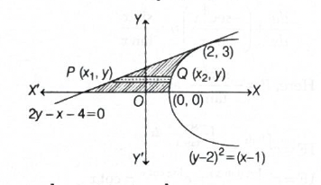
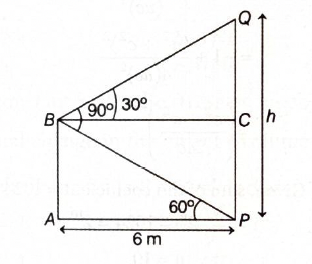
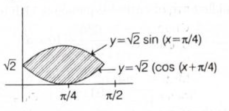

Quick explanation: Let the other root be
\(\beta\). From \(4x^2+2x-1=0\), the sum of roots is
\(\alpha+\beta=-\dfrac{1}{2}\). Using the fact that \(\alpha\)
satisfies \(4\alpha^2+2\alpha-1=0\), we can simplify
\(4\alpha^3-3\alpha\) to \(-\dfrac{1}{2}-\alpha=\beta\).
This gives \(\alpha-2\alpha^2-3\alpha=-2\alpha^2-2\alpha\).
Now write it as \(-\dfrac{1}{2}(4\alpha^2+4\alpha)\).
Using \(4\alpha^2=1-2\alpha\), we get
\(-\dfrac{1}{2}(1-2\alpha+4\alpha)=-\dfrac{1}{2}(1+2\alpha)\).
So, \(4\alpha^3-3\alpha=-\dfrac{1}{2}-\alpha\).
But \(\beta=-\dfrac{1}{2}-\alpha\), hence
\(\beta=4\alpha^3-3\alpha\).
Final result: The other root is
\(4\alpha^3-3\alpha\).
Simple memory tip: If one root is given as
\(\alpha\), use the original equation to replace higher powers
of \(\alpha\).
Exam shortcut: Use sum of roots first: other
root \(=-\dfrac{1}{2}-\alpha\). Then check which option
simplifies to this.
Why the other options are wrong: Only
\(4\alpha^3-3\alpha\) reduces to \(-\dfrac{1}{2}-\alpha\), the
other root.
Answer: \((b)\ 12\)
Quick explanation: \(A\cap B\) means the
elements common to both \(A\) and \(B\). So the numbers must be
multiples of both \(4\) and \(6\), which means they are
multiples of \(\operatorname{LCM}(4,6)=12\).
If \(x\in A\cap B\), then \(x\in A\) and \(x\in B\).
So, \(x\) must be a multiple of \(4\) and also a multiple of
\(6\).
A number which is a multiple of both \(4\) and \(6\) must be a
multiple of their LCM.
Now, \(4=2^2\) and \(6=2\cdot3\).
So, \(\operatorname{LCM}(4,6)=2^2\cdot3=12\).
Therefore, \(A\cap B\) consists of multiples of \(12\).
Final result: \(A\cap B\) consists of multiples
of \(12\).
Simple memory tip: Intersection of two
multiple-sets means common multiples, so use LCM.
Exam shortcut: Common multiples of \(4\) and
\(6\) are multiples of \(12\).
Why the other options are wrong: \(4\) and
\(8\) are not common multiples of \(4\) and \(6\), while \(16\)
is also not divisible by \(6\). Only \(12\) works as the
common-multiple base.
Answer: \((d)\ |z|\le3\)
Quick explanation: Since \(|w|=2\), write
\(w=2(\cos\theta+i\sin\theta)\). Then
\(\dfrac{1}{w}=\dfrac{1}{2}(\cos\theta-i\sin\theta)\), so
\(z=\dfrac{3}{2}\cos\theta+\dfrac{5}{2}i\sin\theta\). Its
maximum possible modulus is less than \(3\), so \(|z|\le3\).
This gives
\(|z|=\sqrt{\dfrac{9}{4}\cos^2\theta+\dfrac{25}{4}\sin^2\theta}\).
The maximum value occurs when \(\sin^2\theta=1\), giving
\(|z|_{\max}=\dfrac{5}{2}\).
Since \(\dfrac{5}{2}<3\), every such point satisfies
\(|z|\le3\).
Therefore, the set of points is contained in \(|z|\le3\).
Final result: The correct set is \(|z|\le3\).
Simple memory tip: When \(|w|\) is fixed, write
\(w=r(\cos\theta+i\sin\theta)\).
Exam shortcut: Convert \(w\) and
\(\dfrac{1}{w}\) into trigonometric form, then estimate the
maximum modulus.
Why the other options are wrong:
\(\operatorname{Im}(z)\) is not always \(0\),
\(|\operatorname{Im}(z)|\) can go up to \(\dfrac{5}{2}\), and
\(|\operatorname{Re}(z)|\le\dfrac{3}{2}\) is true but not the
matching option. The given correct containing set is
\(|z|\le3\).
Answer: \((b)\ \dfrac{1}{8}\)
Quick explanation: Use \(1-\cos
u=2\sin^2\dfrac{u}{2}\). Here \(u=1-\cos
x=2\sin^2\dfrac{x}{2}\). So the expression becomes approximately
\(\dfrac{2\sin^2(\sin^2(x/2))}{x^4}\), and using \(\sin t\sim
t\) gives the value \(\dfrac{1}{8}\).
Final result: The value of the limit is
\(\dfrac{1}{8}\).
Simple memory tip: In limits with \(1-\cos\),
convert to \(2\sin^2\) form.
Exam shortcut: Near \(0\), use \(1-\cos
x\sim\dfrac{x^2}{2}\). Then \(1-\cos(1-\cos x)\sim\dfrac{(1-\cos
x)^2}{2}\sim\dfrac{x^4}{8}\).
Why the other options are wrong: The
small-angle approximation gives exactly \(\dfrac{x^4}{8}\) in
the numerator, so the limit is \(\dfrac{1}{8}\), not
\(\dfrac{1}{6}\), \(\dfrac{1}{10}\), or \(\dfrac{1}{12}\).
Answer: \((d)\) 6
Quick explanation: First find the common
difference of the AP and calculate \(a_4\). Since \(h_1, h_2,
\ldots, h_{10}\) are in HP, their reciprocals are in AP; use
this to find \(h_7\).
BITSAT chapter / topic / subtopic: Algebra /
Sequences and Series / Arithmetic Progression and Harmonic
Progression - Page M6
For the AP \(a_1, a_2, \ldots\), let the common difference be
\(d\).
Given \(a_1 = 2\) and \(a_{10} = 3\). Since \(a_{10} = a_1 +
9d\), we get \(3 = 2 + 9d\).
So, \(9d = 1\), hence \(d = \dfrac{1}{9}\).
Now \(a_4 = a_1 + 3d = 2 + 3\left(\dfrac{1}{9}\right) = 2 +
\dfrac{1}{3} = \dfrac{7}{3}\).
For HP, remember: if \(h_1, h_2, \ldots\) are in HP, then
\(\dfrac{1}{h_1}, \dfrac{1}{h_2}, \ldots\) are in AP.
Let the common difference of \(\dfrac{1}{h_1}, \dfrac{1}{h_2},
\ldots, \dfrac{1}{h_{10}}\) be \(D\).
Given \(h_1 = 2\) and \(h_{10} = 3\), so \(\dfrac{1}{h_1} =
\dfrac{1}{2}\) and \(\dfrac{1}{h_{10}} = \dfrac{1}{3}\).
Using AP formula: \(\dfrac{1}{h_{10}} = \dfrac{1}{h_1} + 9D\),
so \(\dfrac{1}{3} = \dfrac{1}{2} + 9D\).
Final result: \(a_4h_7 = \dfrac{7}{3} \times
\dfrac{18}{7} = 6\).
Simple memory tip: HP questions become AP
questions after taking reciprocals.
Why the other options are wrong: Options 2, 3,
and 5 usually come from treating \(h_1, h_2, \ldots\) directly
as AP terms instead of converting HP into reciprocal AP.
Exam shortcut: In mixed AP-HP questions,
calculate AP part normally, but for HP immediately write
\(\dfrac{1}{h_n}\) as the AP term.
Answer: \((a)\) 5
Quick explanation: In \((1 + y)^9 + (1 -
y)^9\), all odd-power terms cancel and only even-power terms
remain. For power 9, the even powers are \(0, 2, 4, 6, 8\), so
there are 5 terms.
BITSAT chapter / topic / subtopic: Algebra /
Binomial Theorem / Expansion and number of terms - Page M9
Let \(y = 5\sqrt{2}x\). Then the expression becomes \((1 + y)^9
+ (1 - y)^9\).
Using binomial expansion, \((1 + y)^9\) contains both even and
odd powers of \(y\).
But \((1 - y)^9\) changes the signs of the odd-power terms only.
So when we add \((1 + y)^9 + (1 - y)^9\), the odd-power terms
cancel.
The remaining terms are from \(y^0, y^2, y^4, y^6, y^8\).
Therefore, the expansion contains 5 terms.
Final result: Number of terms \(= 5\).
Simple memory tip: \((a+b)^n + (a-b)^n\) keeps
only even powers of \(b\); \((a+b)^n - (a-b)^n\) keeps only odd
powers of \(b\).
Why the other options are wrong: Options 7, 9,
and 10 ignore the cancellation of odd-power terms after adding
the two expansions.
Exam shortcut: For \(n = 9\), even powers are
\(0, 2, 4, 6, 8\), so count \(= 5\) directly.
Answer: \((a)\) \({}^7C_2 2^5\)
Quick explanation: First choose the 2 positions
where digit 2 will appear. The remaining 5 positions can each be
filled by either 1 or 3.
BITSAT chapter / topic / subtopic: Algebra /
Permutations and Combinations / Counting arrangements with
restrictions - Page M8
There are 7 places in the number.
The digit 2 must occur exactly twice, so choose 2 places out of
7 for the digit 2.
This can be done in \({}^7C_2\) ways.
Now the remaining 5 places must be filled using only 1 and 3.
Each of these 5 places has 2 choices: either 1 or 3.
So the remaining 5 places can be filled in \(2^5\) ways.
Therefore, total number of seven-digit numbers \(= {}^7C_2
\times 2^5\).
Final result: \({}^7C_2 2^5\).
Simple memory tip: For "exactly twice", first
choose the two fixed positions, then fill the rest freely.
Why the other options are wrong: \({}^7P_2\) is
wrong because the two selected positions both contain the same
digit 2, so order does not matter. \({}^7C_2 5^2\) is wrong
because the remaining 5 places have 2 choices each, not 5
choices each.
Exam shortcut: Fixed repeated digit positions
use combination, not permutation.
Answer: \((d)\) 3
Quick explanation: For the system to have no
solution, the coefficient determinant must become zero. Form the
determinant using the coefficients of \(x, y, z\) and solve for
\(\lambda\).
BITSAT chapter / topic / subtopic: Algebra /
Matrices and Determinants / Consistency of system of linear
equations - Page M9
The coefficient matrix of the system is \(\begin{vmatrix} 2 & -1
& 2 \\ 1 & -2 & 1 \\ 1 & 1 & \lambda \end{vmatrix}\).
For no solution, the determinant of the coefficient matrix must
be zero.
Important note: The printed solution shown in
the image simplifies to \(\lambda = 3\), but direct determinant
expansion gives \(\lambda = 1\). So the printed answer appears
to contain an algebra/sign error.
Final result by correct calculation: \(\lambda
= 1\), which corresponds to option \((b)\).
Simple memory tip: For three linear equations,
first check the determinant of the coefficient matrix. If it
becomes zero, the system may have either no solution or
infinitely many solutions, so then consistency should be checked
carefully.
Why the printed option may be questionable: The
given answer key marks option \((d)\), but the determinant
calculation supports option \((b)\).
Exam shortcut: Substitute options into the
determinant; the value making \(\begin{vmatrix} 2 & -1 & 2 \\ 1
& -2 & 1 \\ 1 & 1 & \lambda \end{vmatrix} = 0\) is \(\lambda =
1\).
Answer: \((d)\) 5
Quick explanation: Since \(B = A^{-1}\), use
\(A^{-1} = \dfrac{1}{|A|}\operatorname{adj}A\). After finding
\(|A| = 10\), compare \(10B\) with \(\operatorname{adj}A\).
BITSAT chapter / topic / subtopic: Algebra /
Matrices and Determinants / Inverse of a matrix using adjoint -
Page M9
Given \(B\) is the inverse of \(A\), so \(B = A^{-1}\).
So, \(\dfrac{7}{2}(1+\cos 2x) = \dfrac{7}{2}\cdot 2\cos^2 x =
7\cos^2 x\).
Also, \(\sin^2 x - 48\cos^2 x = 1-\cos^2 x-48\cos^2 x =
1-49\cos^2 x\).
Therefore, the expression inside \(\cos^{-1}\) becomes \(7\cos^2
x + \sqrt{1-49\cos^2 x}\sin x\).
Write it as \((7\cos x)\cos x + \sqrt{1-49\cos^2 x}\sin x\).
Let \(\theta = \cos^{-1}(7\cos x)\). Then \(\cos\theta = 7\cos
x\) and \(\sin\theta = \sqrt{1-49\cos^2 x}\).
So the expression becomes \(\cos x\cos\theta + \sin
x\sin\theta\).
Using \(\cos(A-B) = \cos A\cos B + \sin A\sin B\), this becomes
\(\cos(x-\theta)\).
Hence, \(\cos^{-1}(\cos(x-\theta)) = x-\theta\).
Substituting back \(\theta = \cos^{-1}(7\cos x)\), the value is
\(x-\cos^{-1}(7\cos x)\).
Final result: \(x-\cos^{-1}(7\cos x)\).
Simple memory tip: Whenever you see \(a\cos x +
b\sin x\) with \(a^2+b^2=1\), try matching it with
\(\cos(A-B)\).
Why the other options are wrong: The expression
matches \(\cos(x-\theta)\), not \(\cos(x+\theta)\), so options
with plus signs are not correct. The coefficient is \(7\cos x\),
not \(6\cos x\).
Exam shortcut: First simplify \(1+\cos 2x\),
then look for the pattern \(\cos x\cos\theta + \sin
x\sin\theta\).
Answer: \((c)\) 35 ft and 110 ft
Quick explanation: The two semicircles together
make one full circle. Use the fixed perimeter \(440\) to write
the rectangular area in one variable, then maximize it using
differentiation.
Differentiate with respect to \(x\): \(\dfrac{dA}{dx} =
\dfrac{1}{\pi}(440-4x)\).
For maximum area, set \(\dfrac{dA}{dx}=0\). Thus, \(440-4x=0\),
so \(x=110\).
Now \(2r = \dfrac{440-2(110)}{\pi} = \dfrac{220}{\pi}\).
Using \(\pi = \dfrac{22}{7}\), \(2r = \dfrac{220}{22/7} = 70\),
so \(r=35\).
Hence, the rectangle has sides \(110\) ft and \(2r=70\) ft. The
option lists \(35\) ft and \(110\) ft, following the printed
solution's use of radius \(r=35\) ft with length \(x=110\) ft.
Final result: Printed answer: \(35\) ft and
\(110\) ft, option \((c)\). Rectangular side lengths are \(70\)
ft and \(110\) ft if width means full diameter \(2r\).
Simple memory tip: Two semicircles at the ends
make one full circle for perimeter calculation.
Why the other options are wrong: They do not
come from maximizing \(A = \dfrac{1}{\pi}(440x-2x^2)\) under the
fixed perimeter condition.
Exam shortcut: For a stadium shape, write
perimeter as \(2x+2\pi r\), not \(2x+4\pi r\).
Given \(\left(\dfrac{dy}{dx}\right)\tan x = y\sec^2 x+\sin x\).
Bring the \(y\)-term to the left side: \(\tan
x\dfrac{dy}{dx}-y\sec^2 x=\sin x\).
Divide by \(\tan x\): \(\dfrac{dy}{dx}-\dfrac{\sec^2 x}{\tan
x}y=\dfrac{\sin x}{\tan x}\).
Since \(\dfrac{\sin x}{\tan x}=\cos x\), the equation becomes
\(\dfrac{dy}{dx}-\dfrac{\sec^2 x}{\tan x}y=\cos x\).
This is a linear differential equation with \(P=-\dfrac{\sec^2
x}{\tan x}\) and \(Q=\cos x\).
The integrating factor is \(IF=e^{\int Pdx}=e^{\int
-\dfrac{\sec^2 x}{\tan x}dx}\).
Since \(\int \dfrac{\sec^2 x}{\tan x}dx = \log|\tan x|\), we get
\(IF=e^{-\log|\tan x|}=\cot x\).
Now, solution is \(y \cdot IF = \int Q \cdot IF \, dx + C\).
So, \(y\cot x = \int \cos x\cot x\,dx + C\).
Now \(\cos x\cot x = \dfrac{\cos^2 x}{\sin x} = \dfrac{1-\sin^2
x}{\sin x} = \cosec x-\sin x\).
Therefore, \(y\cot x = \int(\cosec x-\sin x)\,dx + C\).
This gives \(y\cot x = \log|\cosec x-\cot x|+\cos x+C\).
Multiplying by \(\tan x\), \(y=\tan x(\log|\cosec x-\cot x|+\cos
x+C)\).
Final result: \(y=\tan x(\log|\cosec x-\cot
x|+\cos x+C)\).
Simple memory tip: Linear differential equation
format is \(y'+Py=Q\), and solution is \(y \cdot IF = \int Q
\cdot IF\,dx+C\).
Why the other options are wrong: They do not
follow from the integrating factor \(\cot x\) and miss the
required logarithmic term \(\log|\cosec x-\cot x|\).
Exam shortcut: Once you see \(y'\tan x-y\sec^2
x\), divide by \(\tan x\) to get a standard linear equation
quickly.
Answer: \((d)\) \(\dfrac{a}{m} - a^2m\)
Quick explanation: Substitute \(y = mx+c\) in
the parabola. Since the line touches the parabola, the resulting
quadratic in \(x\) must have discriminant zero.
Simple memory tip: A tangent touches a curve at
exactly one point, so after substitution the quadratic must have
\(D=0\).
Why the other options are wrong: They do not
satisfy the discriminant-zero condition after substituting
\(y=mx+c\) in the parabola.
Exam shortcut: For tangent-condition problems,
do not solve the roots; just use discriminant \(=0\).
Answer: \((c)\) \(2x - y - 12 - 4\sqrt{3} = 0\)
Quick explanation: Compare \(y^2=8x\) with
\(y^2=4ax\), so \(a=2\). Since the normal makes \(60^\circ\)
with the horizontal line \(y=8\), its slope is \(\tan
60^\circ=\sqrt{3}\).
BITSAT chapter / topic / subtopic:
Two-dimensional Coordinate Geometry / Parabola / Normal to
parabola - Page M54
For the parabola \(y^2 = 4ax\), the equation of normal with
slope \(m\) is \(y = mx - 2am - am^3\).
The corresponding point of contact is \(P(am^2, -2am)\).
Here, \(y^2=8x\), so \(4a=8\), hence \(a=2\).
The normal is inclined at \(60^\circ\) with the line \(y=8\),
which is horizontal.
Therefore, \(m=\tan 60^\circ=\sqrt{3}\).
So, \(P=(am^2,-2am)\).
Substitute \(a=2\) and \(m=\sqrt{3}\):
\(P=(2(\sqrt{3})^2,-2(2)(\sqrt{3}))\).
Quick explanation: Rewrite the integrand using
\(\dfrac{x-1}{x+2}\). Then substitute \(t=\dfrac{x-1}{x+2}\),
because its derivative gives \(\dfrac{3}{(x+2)^2}\,dx\).
Final result:
\(\dfrac{4}{3}\left(\dfrac{x-1}{x+2}\right)^{1/4}+C\).
Simple memory tip: If powers of \((x-1)\) and
\((x+2)\) are mixed, try the ratio \(\dfrac{x-1}{x+2}\).
Why the other options are wrong: They either
use the wrong ratio or the wrong constant multiplier after
substitution.
Exam shortcut: Notice that derivative of
\(\dfrac{x-1}{x+2}\) gives \(\dfrac{3}{(x+2)^2}\), exactly
matching the hidden factor in the integrand.
Answer: \((c)\) 9
Quick explanation: Write the parabola as
\(x=(y-2)^2+1\) and the tangent as \(x=2y-4\). The required area
is integrated with respect to \(y\) from \(0\) to \(3\).
BITSAT chapter / topic / subtopic: Integral
Calculus / Area under curves / Area bounded by parabola and
tangent - Page M92 Two-dimensional Coordinate Geometry /
Parabola / Tangent to parabola - Page M54

Given parabola: \((y-2)^2=x-1\).
So, \(x=(y-2)^2+1\).
The tangent at \((2,3)\) is \(2y-x-4=0\), so \(x=2y-4\).
The required area lies between the parabola and the tangent from
\(y=0\) to \(y=3\).
Area \(A=\int_0^3 (x_2-x_1)\,dy\), where \(x_2\) is the right
curve and \(x_1\) is the left curve.
Quick explanation: Since
\(\hat{u}\times\hat{v}\) is perpendicular to both \(\hat{u}\)
and \(\hat{v}\), it is perpendicular to
\(\dfrac{\hat{u}+\hat{v}}{2}\). So square the given modulus and
use \(\hat{u}\cdot\hat{v}=\cos\theta\).
Final result:
\(|\hat{u}\times\hat{v}|=\left|\dfrac{\hat{u}-\hat{v}}{2}\right|\).
Simple memory tip: Cross product is
perpendicular to both original vectors, so use Pythagoras when
adding it to a vector lying in their plane.
Why the other options are wrong: They do not
match \(\dfrac{\sqrt{3}}{2}\) after using
\(\cos\theta=-\dfrac{1}{2}\).
Exam shortcut: Square the given vector modulus
immediately; the dot term becomes zero because of
perpendicularity.
Answer: \((b)\) \(\dfrac{5}{8}\)
Quick explanation: Let probability of even be
\(p\). Then probability of odd is \(3p\). Since odd and even are
exhaustive, \(p+3p=1\), so \(p=\dfrac{1}{4}\) and odd
probability is \(\dfrac{3}{4}\).
BITSAT chapter / topic / subtopic: Probability
/ Basic probability / Independent events and addition of
probabilities - Page M105
Let \(P(E)=p\), where \(E\) means getting an even number.
Given odd is thrice as likely as even, so \(P(O)=3p\).
Since every throw gives either odd or even, \(P(E)+P(O)=1\).
Thus, \(p+3p=1\), so \(4p=1\), hence \(p=\dfrac{1}{4}\).
Therefore, \(P(E)=\dfrac{1}{4}\) and \(P(O)=\dfrac{3}{4}\).
The sum of two throws is even in two cases: both numbers are odd
or both numbers are even.
So, required probability \(=P(O,O)+P(E,E)\).
Since the throws are independent, required probability
\(=\dfrac{3}{4}\cdot\dfrac{3}{4}+\dfrac{1}{4}\cdot\dfrac{1}{4}\).
This gives
\(\dfrac{9}{16}+\dfrac{1}{16}=\dfrac{10}{16}=\dfrac{5}{8}\).
Final result: \(\dfrac{5}{8}\).
Simple memory tip: Even sum comes from same
parity: odd + odd or even + even.
Why the other options are wrong: They do not
use the biased probabilities \(\dfrac{3}{4}\) and
\(\dfrac{1}{4}\) correctly.
Exam shortcut: For two throws, even-sum
probability \(=P(O)^2+P(E)^2\).
Answer: \((b)\) \(30\pi\)
Quick explanation: Use product-to-sum on
\(\cos\left(\dfrac{\pi}{3}+\theta\right)\cos\left(\dfrac{\pi}{3}-\theta\right)\).
The equation reduces to \(\cos 3\theta=1\).
Given equation:
\(\cos\theta\cos\left(\dfrac{\pi}{3}+\theta\right)\cos\left(\dfrac{\pi}{3}-\theta\right)=\dfrac{1}{4}\).
Using \(2\cos A\cos B=\cos(A+B)+\cos(A-B)\), we get
\(\cos\left(\dfrac{\pi}{3}+\theta\right)\cos\left(\dfrac{\pi}{3}-\theta\right)=\dfrac{1}{2}\left(\cos\dfrac{2\pi}{3}+\cos
2\theta\right)\).
So, \(\cos\theta\cdot\dfrac{1}{2}\left(\cos\dfrac{2\pi}{3}+\cos
2\theta\right)=\dfrac{1}{4}\).
Multiplying by 4, \(2\cos\theta\left(\cos\dfrac{2\pi}{3}+\cos
2\theta\right)=1\).
Since \(\cos\dfrac{2\pi}{3}=-\dfrac{1}{2}\), we get
\(2\cos\theta\left(-\dfrac{1}{2}+\cos 2\theta\right)=1\).
Using \(\cos 2\theta=2\cos^2\theta-1\), this becomes
\(2\cos\theta\left(2\cos^2\theta-\dfrac{3}{2}\right)=1\).
So, \(4\cos^3\theta-3\cos\theta=1\).
Using \(\cos 3\theta=4\cos^3\theta-3\cos\theta\), we get \(\cos
3\theta=1\).
Therefore, \(3\theta=2n\pi\), so \(\theta=\dfrac{2n\pi}{3}\).
Since \(\theta\in[0,6\pi]\), \(n=0,1,2,\ldots,9\).
The sum of all solutions is \(\dfrac{2\pi}{3}(0+1+2+\cdots+9)\).
Now, \(0+1+2+\cdots+9=\dfrac{9\cdot10}{2}=45\).
Hence, sum \(=\dfrac{2\pi}{3}\cdot45=30\pi\).
Final result: \(30\pi\).
Simple memory tip: Whenever you get
\(4\cos^3\theta-3\cos\theta\), immediately replace it with
\(\cos 3\theta\).
Why the other options are wrong: They come from
missing either the endpoint values or the correct triple-angle
reduction.
Exam shortcut: Convert the product first; the
equation quickly becomes \(\cos 3\theta=1\).
Answer: \((c)\) \(2\alpha\)
Quick explanation: First solve the exponential
trigonometric equation to get \(\alpha=\dfrac{\pi}{6}\). Then
use \(\tan\theta=\dfrac{\text{height}}{\text{shadow}}\) for the
altitude of the sun.
Since \(\alpha=\dfrac{\pi}{6}\), we get \(\phi=2\alpha\).
Final result: Altitude of the sun \(=2\alpha\).
Simple memory tip: In shadow problems,
\(\tan\theta=\dfrac{\text{height}}{\text{shadow}}\).
Why the other options are wrong: The equation
gives \(\alpha=\dfrac{\pi}{6}\), while the shadow condition
gives altitude \(\dfrac{\pi}{3}\), which is \(2\alpha\).
Exam shortcut: Shadow \(=\dfrac{h}{\sqrt{3}}\)
means \(\tan\theta=\sqrt{3}\), so
\(\theta=60^\circ=\dfrac{\pi}{3}\) instantly.
Answer: \((b)\) \((0,1)\)
Quick explanation: Let the parabola cut the
X-axis at \((\alpha,0)\), \((\beta,0)\), and the Y-axis at
\((0,q)\). Write the general circle through these three points
and simplify; the resulting family always passes through
\((0,1)\).
BITSAT chapter / topic / subtopic:
Two-dimensional Coordinate Geometry / Circle / Family of circles
through three points - Page M49 Two-dimensional Coordinate
Geometry / Parabola / Intercepts of parabola - Page M54
The parabola \(y=x^2+px+q\) cuts the X-axis where \(y=0\).
So, \(x^2+px+q=0\). Let its roots be \(\alpha\) and \(\beta\).
Therefore, the X-axis intersection points are \(A(\alpha,0)\)
and \(B(\beta,0)\).
From the quadratic, \(\alpha+\beta=-p\) and \(\alpha\beta=q\).
The parabola cuts the Y-axis at \(x=0\), so \(y=q\). Hence the
third point is \(C(0,q)\).
Let the circle passing through \(A\), \(B\), and \(C\) be
\(x^2+y^2+2gx+2fy+c=0\).
Since \(A(\alpha,0)\) lies on it, \(\alpha^2+2g\alpha+c=0\).
Since \(B(\beta,0)\) lies on it, \(\beta^2+2g\beta+c=0\).
Subtracting these two equations gives
\((\alpha-\beta)(\alpha+\beta+2g)=0\).
Since \(\alpha\neq\beta\), we get \(\alpha+\beta+2g=0\).
Using \(\alpha+\beta=-p\), we get \(g=\dfrac{p}{2}\).
Using the two X-axis points together gives \(c=q\).
Now use \(C(0,q)\) in the circle equation: \(q^2+2fq+c=0\).
Since \(c=q\), we get \(q^2+2fq+q=0\), so \(f=-\dfrac{q+1}{2}\).
Thus the family of circles becomes \(x^2+y^2+px-(q+1)y+q=0\).
Now test \((0,1)\): \(0^2+1^2+p(0)-(q+1)(1)+q=1-q-1+q=0\).
Therefore, every such circle passes through \((0,1)\).
Final result: \((0,1)\).
Simple memory tip: For a circle through
variable intercepts of \(y=x^2+px+q\), the fixed point comes by
forming the circle family and substituting options.
Why the other options are wrong: \((1,0)\),
\((1,1)\), and \((p,q)\) do not satisfy the final family of
circles for all values of \(p\) and \(q\).
Exam shortcut: After deriving the family
\(x^2+y^2+px-(q+1)y+q=0\), directly substitute the given
options.
Answer: \((c)\) 80
Quick explanation: First arrange the letters
\(H,A,A,A\). Then place \(V\) and \(N\) in two non-adjacent gaps
around them.
BITSAT chapter / topic / subtopic: Algebra /
Permutations and Combinations / Arrangements with restriction -
Page M8
The word HAVANA has letters \(H,V,N,A,A,A\).
First arrange \(H,A,A,A\).
Number of arrangements of \(H,A,A,A\) is \(\dfrac{4!}{3!}=4\).
For any one arrangement of these four letters, there are 5 gaps
around them where \(V\) and \(N\) can be placed.
To ensure \(V\) and \(N\) do not appear together, place them in
two different gaps.
The number of ways to choose and arrange \(V\) and \(N\) in two
of the 5 gaps is \({}^5P_2=5\cdot4=20\).
Therefore, total number of arrangements \(=4\times20=80\).
Final result: \(80\).
Simple memory tip: For "two letters not
together", arrange the other letters first and then place the
restricted letters in separate gaps.
Why the other options are wrong: They miss
either the repeated \(A\)'s adjustment or the ordered placement
of \(V\) and \(N\) in separate gaps.
Exam shortcut: Arrange \(HAAA\) first, then use
\({}^5P_2\) for \(V,N\) in gaps.
Answer: \((d)\) 25
Quick explanation: Since \(a_1,a_2,a_3,\ldots\)
are in HP, their reciprocals are in AP. Use \(\dfrac{1}{a_1}\)
and \(\dfrac{1}{a_{20}}\) to find the AP common difference, then
find when \(\dfrac{1}{a_n}\) becomes negative.
BITSAT chapter / topic / subtopic: Algebra /
Sequences and Series / Harmonic Progression - Page M6
Since \(a_1,a_2,a_3,\ldots\) are in HP,
\(\dfrac{1}{a_1},\dfrac{1}{a_2},\dfrac{1}{a_3},\ldots\) are in
AP.
Given \(a_1=5\), so \(\dfrac{1}{a_1}=\dfrac{1}{5}\).
Given \(a_{20}=25\), so \(\dfrac{1}{a_{20}}=\dfrac{1}{25}\).
Let the common difference of the reciprocal AP be \(d\).
So, \(\dfrac{1}{a_n}=\dfrac{1}{5}-\dfrac{4(n-1)}{19\cdot25}\).
Writing with common denominator,
\(\dfrac{1}{a_n}=\dfrac{95-4n+4}{19\cdot25}=\dfrac{99-4n}{19\cdot25}\).
For \(a_n<0\), \(\dfrac{1}{a_n}<0\).
So, \(\dfrac{99-4n}{19\cdot25}<0\).
Since denominator is positive, \(99-4n<0\).
Thus, \(4n>99\), so \(n>24.75\).
The least positive integer \(n\) is \(25\).
Final result: \(n=25\).
Simple memory tip: HP becomes AP after taking
reciprocals.
Why the other options are wrong: For
\(n=22,23,24\), \(\dfrac{1}{a_n}\) is still positive, so \(a_n\)
is not negative.
Exam shortcut: Find the first \(n\) where the
reciprocal AP term crosses zero.
Answer: \((b)\) \(\dfrac{3}{2}\)
Quick explanation: The normal vector of the
plane is \((3,1,2)\). The direction ratios of the line are
\(\left(\dfrac{2b}{3},-1,a\right)\). For a line parallel to a
plane, direction vector of the line is perpendicular to normal
vector of the plane.
BITSAT chapter / topic / subtopic:
Three-dimensional Coordinate Geometry / Plane and straight line
/ Condition for line parallel to plane - Page M63
Given plane is \(3x+y+2z+6=0\).
Its normal vector is \((3,1,2)\).
The given line is \(\dfrac{3x-1}{2b}=3-y=\dfrac{z-1}{a}\).
Rewrite the first part:
\(\dfrac{3x-1}{2b}=\dfrac{x-\dfrac{1}{3}}{\dfrac{2b}{3}}\).
Also, \(3-y=-(y-3)=\dfrac{y-3}{-1}\).
So the direction ratios of the line are
\(\left(\dfrac{2b}{3},-1,a\right)\).
For the line to be parallel to the plane, the line direction
vector must be perpendicular to the plane normal vector.
Quick explanation: Find the inverse of the
second matrix and multiply. The entries simplify using
\(\dfrac{1-\tan^2\theta}{1+\tan^2\theta}=\cos 2\theta\) and
\(\dfrac{2\tan\theta}{1+\tan^2\theta}=\sin 2\theta\).
BITSAT chapter / topic / subtopic: Algebra /
Matrices and Determinants / Inverse and multiplication of
matrices - Page M9 Trigonometry / Trigonometric identities
/ Double-angle identities - Page M36
Let \(t=\tan\theta\).
The expression is \(\begin{bmatrix} 1 & -t \\ t & 1
\end{bmatrix}\begin{bmatrix} 1 & t \\ -t & 1
\end{bmatrix}^{-1}\).
The inverse of \(\begin{bmatrix} 1 & t \\ -t & 1 \end{bmatrix}\)
is \(\dfrac{1}{1+t^2}\begin{bmatrix} 1 & -t \\ t & 1
\end{bmatrix}\).
So the product becomes \(\dfrac{1}{1+t^2}\begin{bmatrix} 1 & -t
\\ t & 1 \end{bmatrix}\begin{bmatrix} 1 & -t \\ t & 1
\end{bmatrix}\).
Multiplying the matrices, we get
\(\dfrac{1}{1+t^2}\begin{bmatrix} 1-t^2 & -2t \\ 2t & 1-t^2
\end{bmatrix}\).
Thus the matrix is \(\begin{bmatrix} \dfrac{1-t^2}{1+t^2} &
-\dfrac{2t}{1+t^2} \\ \dfrac{2t}{1+t^2} & \dfrac{1-t^2}{1+t^2}
\end{bmatrix}\).
Using \(t=\tan\theta\),
\(\dfrac{1-\tan^2\theta}{1+\tan^2\theta}=\cos 2\theta\).
Comparing with \(\begin{bmatrix} a & -b \\ b & a
\end{bmatrix}\), we get \(a=\cos 2\theta\) and \(b=\sin
2\theta\).
Final result: \(a=\cos 2\theta, b=\sin
2\theta\).
Simple memory tip: A matrix of the form
\(\begin{bmatrix} \cos\phi & -\sin\phi \\ \sin\phi & \cos\phi
\end{bmatrix}\) represents a rotation by angle \(\phi\).
Why the other options are wrong: The diagonal
entry is \(\cos 2\theta\), not \(1\) or \(\sin 2\theta\).
Exam shortcut: After multiplication,
immediately match \(\dfrac{1-\tan^2\theta}{1+\tan^2\theta}\) and
\(\dfrac{2\tan\theta}{1+\tan^2\theta}\) with double-angle
identities.
Answer: \((a)\) \(\dfrac{11}{24}e\)
Quick explanation: Expand \((1+x)^{1/x}\) using
logarithm series. The subtraction of \(e\) and addition of
\(\dfrac{1}{2}ex\) removes the constant and first-degree terms,
leaving the coefficient of \(x^2\).
BITSAT chapter / topic / subtopic: Differential
Calculus / Limits / Standard limits and series expansion - Page
M67
Let \(y=(1+x)^{1/x}\).
Then \(\log y=\dfrac{1}{x}\log(1+x)\).
Using
\(\log(1+x)=x-\dfrac{x^2}{2}+\dfrac{x^3}{3}-\dfrac{x^4}{4}+\cdots\),
we get \(\log
y=1-\dfrac{x}{2}+\dfrac{x^2}{3}-\dfrac{x^3}{4}+\cdots\).
Thus, \(y=e\cdot e^{-x/2+x^2/3+\cdots}\).
Now use \(e^u=1+u+\dfrac{u^2}{2}+\cdots\), where
\(u=-\dfrac{x}{2}+\dfrac{x^2}{3}+\cdots\).
Keeping terms up to \(x^2\),
\(y=e\left[1+\left(-\dfrac{x}{2}+\dfrac{x^2}{3}\right)+\dfrac{1}{2}\left(-\dfrac{x}{2}\right)^2+\cdots\right]\).
So,
\(y=e\left[1-\dfrac{x}{2}+\dfrac{x^2}{3}+\dfrac{x^2}{8}+\cdots\right]\).
Quick explanation: Take a point \(P\) on the
given line and write the chord of contact to the circle. If
\((h,k)\) is the midpoint of that chord, use the midpoint chord
equation \(T=S'\) and compare the two equations of the same
chord.
BITSAT chapter / topic / subtopic:
Two-dimensional Coordinate Geometry / Circle / Chord of contact
and midpoint of chord - Page M49
Let \(P\left(t,\dfrac{4t-20}{5}\right)\) be a point on the line
\(4x-5y=20\).
For the circle \(x^2+y^2=9\), the chord of contact from
\(P(x_1,y_1)\) is \(xx_1+yy_1=9\).
So the chord of contact from
\(P\left(t,\dfrac{4t-20}{5}\right)\) is
\(tx+\dfrac{4t-20}{5}y=9\). This is equation \((i)\).
Let \(Q(h,k)\) be the midpoint of this chord.
For circle \(x^2+y^2=9\), the chord with midpoint \((h,k)\) has
equation \(hx+ky=h^2+k^2\). This is equation \((ii)\).
Equations \((i)\) and \((ii)\) represent the same chord, so
their coefficients are proportional.
Since \(\tan^{-1}(1)=\dfrac{\pi}{4}\),
\(f(1)=\log(1+\sqrt{2})-\dfrac{\pi}{4}\).
Final result:
\(\log(1+\sqrt{2})-\dfrac{\pi}{4}\).
Simple memory tip: When \(\sqrt{1+x^2}\)
appears, try \(x=\tan\theta\).
Why the other options are wrong: Option \((a)\)
misses the \(-\tan^{-1}x\) part, and option \((c)\) has the
wrong trigonometric contribution.
Exam shortcut: After \(x=\tan\theta\), quickly
reduce \(\dfrac{\tan^2\theta}{1+\sec\theta}\) to
\(\sec\theta-1\).
Answer: \((c)\) 4 and 7
Quick explanation: Let the unknown observations
be \(x\) and \(y\). Use the mean to get \(x+y=11\), and use the
variance formula to get \(x^2+y^2=65\).
BITSAT chapter / topic / subtopic: Statistics /
Mean and variance / Variance of observations - Page M118
Let the two unknown observations be \(x\) and \(y\).
The five observations are \(1,2,6,x,y\).
Given mean \(=4\), so \(\dfrac{1+2+6+x+y}{5}=4\).
Thus, \(9+x+y=20\), hence \(x+y=11\).
Given variance \(=5.2\).
Use \(\text{variance}=\dfrac{\sum x_i^2}{n}-(\text{mean})^2\).
So, \(\dfrac{1^2+2^2+6^2+x^2+y^2}{5}-4^2=5.2\).
This gives \(\dfrac{41+x^2+y^2}{5}-16=5.2\).
Therefore, \(\dfrac{41+x^2+y^2}{5}=21.2\).
So, \(41+x^2+y^2=106\), hence \(x^2+y^2=65\).
Now, \((x+y)^2=x^2+y^2+2xy\).
Substitute \(x+y=11\) and \(x^2+y^2=65\): \(121=65+2xy\).
Thus, \(2xy=56\), so \(xy=28\).
The two numbers have sum 11 and product 28, so they are 4 and 7.
Final result: The other two observations are
\(4\) and \(7\).
Simple memory tip: Variance formula connects
mean with sum of squares.
Why the other options are wrong: Only \(4\) and
\(7\) have sum \(11\) and satisfy \(x^2+y^2=65\).
Exam shortcut: From mean get sum; from variance
get sum of squares; then use \((x+y)^2=x^2+y^2+2xy\).
Answer: \((a)\) \(-\dfrac{10}{31}\)
Quick explanation: Let the first term of the AP
be \(a\). The 11th term is common to both the AP part and GP
part. Use the condition that the middle term of AP equals the
middle term of GP.
BITSAT chapter / topic / subtopic: Algebra /
Sequences and Series / Arithmetic progression and geometric
progression - Page M6
The first 11 terms are in AP with common difference \(d=2\).
Let the first term of the AP be \(a\).
Then the 11th term of the AP is \(a_{11}=a+10d=a+20\).
The middle term of the first 11 AP terms is the 6th term.
So, AP middle term \(T_6=a+5d=a+10\).
The last 11 terms are in GP with common ratio \(2\).
The first term of this GP is the 11th term of the whole
sequence, which is \(a+20\).
The middle term of the 11-term GP is its 6th term.
So, GP middle term \(=(a+20)\cdot 2^5=32(a+20)\).
Given AP middle term = GP middle term.
Therefore, \(a+10=32(a+20)\).
So, \(a+10=32a+640\).
Thus, \(31a=-630\), hence \(a=-\dfrac{630}{31}\).
The middle term of the entire 21-term sequence is the 11th term.
So, middle term \(=a+20=-\dfrac{630}{31}+20\).
This gives \(-\dfrac{630}{31}+\dfrac{620}{31}=-\dfrac{10}{31}\).
Final result: \(-\dfrac{10}{31}\).
Simple memory tip: In a 21-term sequence, the
middle term is the 11th term.
Why the other options are wrong: They do not
account for the overlap of the 11th term between the AP part and
the GP part.
Exam shortcut: For first 11 and last 11 terms
in a 21-term sequence, the 11th term is common to both parts.
Answer: \((b)\) 2
Quick explanation: Since the homogeneous system
has a non-trivial solution, its determinant is zero. Apply
column operations and simplify the determinant condition.
BITSAT chapter / topic / subtopic: Algebra /
Matrices and Determinants / Homogeneous system of linear
equations - Page M9
For the homogeneous system to have a non-trivial solution, the
coefficient determinant must be zero.
So, \(\Delta=\begin{vmatrix} p & a & a \\ b & q & b \\ c & c & r
\end{vmatrix}=0\).
Apply column operations \(C_2\to C_2-C_1\) and \(C_3\to
C_3-C_1\).
Then \(\Delta=\begin{vmatrix} p & a-p & a-p \\ b & q-b & 0 \\ c
& 0 & r-c \end{vmatrix}=0\).
Expanding along the third column gives \((a-p)\begin{vmatrix} b
& q-b \\ c & 0 \end{vmatrix}+(r-c)\begin{vmatrix} p & a-p \\ b &
q-b \end{vmatrix}=0\).
This gives \((a-p)(-c)(q-b)+(r-c)\{p(q-b)-b(a-p)\}=0\).
Using \(a-p=-(p-a)\), this can be written as
\(c(p-a)(q-b)+p(r-c)(q-b)+b(r-c)(p-a)=0\).
Now divide by \((p-a)(q-b)(r-c)\), which is allowed because
\(p\neq a, q\neq b, r\neq c\).
We get \(\dfrac{c}{r-c}+\dfrac{p}{p-a}+\dfrac{b}{q-b}=0\).
So, \(\dfrac{p}{p-a}=-\dfrac{b}{q-b}-\dfrac{c}{r-c}\).
Now consider the required expression:
\(\dfrac{p}{p-a}+\dfrac{q}{q-b}+\dfrac{r}{r-c}\).
Since \(\dfrac{q}{q-b}=\dfrac{q-b+b}{q-b}=1+\dfrac{b}{q-b}\),
and \(\dfrac{r}{r-c}=\dfrac{r-c+c}{r-c}=1+\dfrac{c}{r-c}\).
Using \(\dfrac{p}{p-a}+\dfrac{b}{q-b}+\dfrac{c}{r-c}=0\), the
value becomes \(2\).
Final result: \(2\).
Simple memory tip: A homogeneous system has
non-trivial solution only when determinant of coefficients is
zero.
Why the other options are wrong: The
determinant condition reduces the variable fraction part to
zero, leaving exactly \(1+1=2\).
Exam shortcut: Use column operations to create
zeros before expanding the determinant.
Answer: \((a)\) \(2x-3\)
Quick explanation: Since
\(\dfrac{1}{2}gof(x)=2x^2-5x+2\), multiply by 2 to get
\(g(f(x))=4x^2-10x+4\). Then substitute \(g(t)=t^2+t-2\) with
\(t=f(x)\).
Given \(\dfrac{1}{2}gof(x)=2x^2-5x+2\), hence
\(g(f(x))=4x^2-10x+4\).
Therefore, \((f(x))^2+f(x)-2=4x^2-10x+4\).
Bring all terms to one side: \((f(x))^2+f(x)-(4x^2-10x+6)=0\).
This is a quadratic in \(f(x)\).
So, \(f(x)=\dfrac{-1\pm\sqrt{1+4(4x^2-10x+6)}}{2}\).
Simplify the expression under the root:
\(1+16x^2-40x+24=16x^2-40x+25=(4x-5)^2\).
Thus, \(f(x)=\dfrac{-1\pm(4x-5)}{2}\).
This gives \(f(x)=2x-3\) or \(f(x)=-2x+2\).
Among the given options, \(f(x)=2x-3\).
Final result: \(f(x)=2x-3\).
Simple memory tip: For \(gof(x)\), first
replace the input of \(g\) by \(f(x)\).
Why the other options are wrong: Only \(2x-3\)
gives \(g(f(x))=4x^2-10x+4\) among the listed options.
Exam shortcut: Try option \((a)\):
\(g(2x-3)=(2x-3)^2+(2x-3)-2=4x^2-10x+4\), so it works
immediately.
Answer: \((a)\) 4
Quick explanation: Rewrite the complex fraction
in polar form. It becomes \(e^{i3\pi/8}\), so the \(n\)th power
is purely imaginary when \(\cos\dfrac{3n\pi}{8}=0\).
BITSAT chapter / topic / subtopic: Algebra /
Complex Numbers / Polar form and De Moivre's theorem - Page M11
Let \(\alpha=\dfrac{\pi}{2}-\dfrac{\pi}{8}=\dfrac{3\pi}{8}\).
Then \(\sin\dfrac{\pi}{8}=\cos\alpha\) and
\(\cos\dfrac{\pi}{8}=\sin\alpha\).
So the given fraction becomes
\(\dfrac{1+\cos\alpha+i\sin\alpha}{1+\cos\alpha-i\sin\alpha}\).
Use \(1+\cos\alpha=2\cos^2\dfrac{\alpha}{2}\) and
\(\sin\alpha=2\sin\dfrac{\alpha}{2}\cos\dfrac{\alpha}{2}\).
Then numerator
\(=2\cos\dfrac{\alpha}{2}\left(\cos\dfrac{\alpha}{2}+i\sin\dfrac{\alpha}{2}\right)\).
Therefore, the fraction becomes
\(\dfrac{\cos\dfrac{\alpha}{2}+i\sin\dfrac{\alpha}{2}}{\cos\dfrac{\alpha}{2}-i\sin\dfrac{\alpha}{2}}\).
This is \(e^{i\alpha}\).
Hence, the given expression becomes
\((e^{i\alpha})^n=e^{in\alpha}\).
Since \(\alpha=\dfrac{3\pi}{8}\), the expression is
\(e^{i3n\pi/8}=\cos\dfrac{3n\pi}{8}+i\sin\dfrac{3n\pi}{8}\).
For it to be purely imaginary, the real part must be zero.
So, \(\cos\dfrac{3n\pi}{8}=0\).
The smallest positive integer \(n\) satisfying this is \(n=4\),
because \(\dfrac{3n\pi}{8}=\dfrac{3\pi}{2}\).
Final result: \(n=4\).
Simple memory tip: A complex number is purely
imaginary when its argument is an odd multiple of
\(\dfrac{\pi}{2}\).
Why the other options are wrong: For
\(n=2,3,8\), the real part is not zero in the required smallest
positive case.
Exam shortcut: Convert the fraction to
\(e^{i3\pi/8}\), then test the options quickly.
Answer: \((a)\) \(8\sqrt{3}\) m
Quick explanation: Use the lower triangle to
find the window height as \(6\sqrt{3}\). Since the first house
subtends \(90^\circ\) at the window, the upper angle becomes
\(30^\circ\), which gives the remaining height.
BITSAT chapter / topic / subtopic: Trigonometry
/ Heights and Distances / Angle of elevation and depression -
Page M42

Let the opposite house have window \(B\), and let the first
house be \(PQ\) with height \(h\).
The distance between the two houses is \(6\) m.
From the bottom \(P\) of the first house, the angle of elevation
to the window \(B\) is \(60^\circ\).
In \(\triangle PAB\), \(\tan 60^\circ=\dfrac{AB}{6}\).
So, \(\sqrt{3}=\dfrac{AB}{6}\), hence \(AB=6\sqrt{3}\) m.
Since \(AB=CP\), we get \(CP=6\sqrt{3}\).
The first house \(PQ\) subtends a right angle at \(B\).
Therefore, the angle between \(BQ\) and the horizontal line
\(BC\) is \(30^\circ\).
In \(\triangle CBQ\), \(\tan 30^\circ=\dfrac{h-CP}{BC}\).
Here, \(BC=6\), so
\(\dfrac{1}{\sqrt{3}}=\dfrac{h-6\sqrt{3}}{6}\).
Final result: Height of the first house
\(=8\sqrt{3}\) m.
Simple memory tip: In height-distance problems,
always split the figure into right triangles.
Why the other options are wrong: \(6\sqrt{3}\)
is only the height of the window, not the full height of the
first house.
Exam shortcut: \(60^\circ\) gives the window
height \(6\sqrt{3}\), and the remaining top part comes from
\(30^\circ\).
Answer: \((c)\) \(\dfrac{2}{9}\)
Quick explanation: First find the balloon
volume after 49 minutes. Then find the radius at that time and
use \(\dfrac{dV}{dt}=4\pi r^2\dfrac{dr}{dt}\).
BITSAT chapter / topic / subtopic: Differential
Calculus / Applications of derivatives / Related rates - Page
M77
The volume of a sphere is \(V=\dfrac{4}{3}\pi r^3\).
Initially, \(V=4500\pi\).
The gas escapes at the rate \(72\pi\) cubic meters per minute.
After \(49\) minutes, volume lost \(=49\cdot72\pi=3528\pi\).
Remaining volume \(=4500\pi-3528\pi=972\pi\).
So, \(\dfrac{4}{3}\pi r^3=972\pi\).
Cancel \(\pi\): \(\dfrac{4}{3}r^3=972\).
Thus, \(r^3=972\cdot\dfrac{3}{4}=729\), so \(r=9\) m.
Now differentiate \(V=\dfrac{4}{3}\pi r^3\) with respect to
\(t\).
We get \(\dfrac{dV}{dt}=4\pi r^2\dfrac{dr}{dt}\).
Since volume is decreasing, \(\dfrac{dV}{dt}=-72\pi\). The
question asks the rate at which radius decreases, so we take the
positive magnitude at the end.
Using magnitudes:
\(72\pi=4\pi(9)^2\left|\dfrac{dr}{dt}\right|\).
Quick explanation: Use \(\sin 3B=3\sin
B-4\sin^3B\), so \(\dfrac{\sin 3B}{\sin B}=3-4\sin^2B\). Then
convert \(\sin^2B\) into \(1-\cos^2B\) and use the cosine rule.
BITSAT chapter / topic / subtopic: Trigonometry
/ Properties of triangles / Sine rule and cosine rule - Page M44
Final result:
\(\left[\dfrac{c^2-a^2}{2ca}\right]^2\).
Simple memory tip: In triangle questions
involving side condition and angle \(B\), cosine rule is usually
the bridge.
Why the other options are wrong: The final
value is a square, so the non-squared options cannot be correct.
Option \((c)\) misses the factor \(4\) in the denominator.
Exam shortcut: Convert \(\dfrac{\sin 3B}{\sin
B}\) to \(4\cos^2B-1\), then apply cosine rule.
Answer: \((b)\) 252
Quick explanation: The sum of coefficients of
\((x+y)^n\) is found by putting \(x=1\), \(y=1\), giving
\(2^n\). Since \(2^n=1024=2^{10}\), \(n=10\), and the greatest
coefficient is \({}^{10}C_5\).
For \((x+y)^n\), the sum of coefficients is obtained by putting
\(x=1\) and \(y=1\).
So, sum of coefficients \(=(1+1)^n=2^n\).
Given \(2^n=1024\).
Since \(1024=2^{10}\), we get \(n=10\).
In the expansion of \((x+y)^{10}\), the coefficients are
\({}^{10}C_0,{}^{10}C_1,\ldots,{}^{10}C_{10}\).
Since \(n=10\) is even, the greatest coefficient is the middle
coefficient \({}^{10}C_{10/2}={}^{10}C_5\).
Now, \({}^{10}C_5=\dfrac{10!}{5!5!}=252\).
Final result: Greatest coefficient \(=252\).
Simple memory tip: Sum of coefficients means
put all variables equal to 1.
Why the other options are wrong: They are not
the middle binomial coefficient of \((x+y)^{10}\).
Exam shortcut: \(1024=2^{10}\), so directly
take the greatest coefficient as \({}^{10}C_5=252\).
Answer: \((b)\) \(2\sqrt{2}(\sqrt{2}-1)\)
Quick explanation: Split the interval at
\(x=\dfrac{\pi}{4}\), because \(\cos x-\sin x\) changes sign
there. Then integrate the difference between the upper curve and
lower curve.
BITSAT chapter / topic / subtopic: Integral
Calculus / Area under curves / Area between two curves with
modulus - Page M92

Given curves are \(y=\sin x+\cos x\) and \(y=|\cos x-\sin x|\).
On \(\left[0,\dfrac{\pi}{4}\right]\), \(\cos x\geq\sin x\), so
\(|\cos x-\sin x|=\cos x-\sin x\).
On \(\left[\dfrac{\pi}{4},\dfrac{\pi}{2}\right]\), \(\sin
x\geq\cos x\), so \(|\cos x-\sin x|=\sin x-\cos x\).
The upper curve is \(y=\sin x+\cos x\) throughout the interval.
Simple memory tip: For modulus in area
questions, split the interval where the expression inside
modulus becomes zero.
Why the other options are wrong: They do not
correctly split \(|\cos x-\sin x|\) at \(x=\dfrac{\pi}{4}\) or
they add the wrong curve difference.
Exam shortcut: Symmetry gives the same area on
both sides of \(\dfrac{\pi}{4}\), so calculate one part and
double it.
Answer: \((c)\) \(\cot\beta\)
Quick explanation: Use sum-to-product
identities for \(\sin\alpha-\sin\gamma\) and
\(\cos\gamma-\cos\alpha\). Since \(\alpha,\beta,\gamma\) are in
AP, \(\dfrac{\alpha+\gamma}{2}=\beta\).